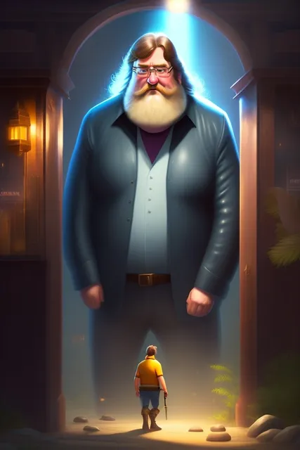

Угадай игру по обзору
ВКонтакте
- Сегодня тот самый понедельник, когда мы раскроем ответ на последний выпуск руб…
17 июля 2023 · №2103 в выгрузке стены · оригинал во ВКонтакте ↗


- Сегодня тот самый понедельник, когда мы раскроем ответ на последний выпуск рубрики по отгадыванию игр, так что добра!
✅ Верный ответ был, всё же: INSIDE
> Именно об этой игре идёт речь, давайте разберёмся почему:
"Limbo" - в игре главный герой не умеет ни плавать, ни нырять.
"Little Nightmares" - у игры есть сюжетное повествование и заставки, которых не должно быть согласно описанию.
"Unravel" - игра обладает выразительной музыкой, что не совпадает с отсутствием музыки на большей части локаций, как указано в обзоре.
"Braid" - игра предлагает более подробное объяснение сюжета и более активное повествование, чем просто намеки через оформление уровней, как упомянуто в обзоре.
"Ori and the Blind Forest" - в игре присутствуют красочные заставки и кинематографические моменты, что не соответствует отсутствию роликов и объяснений, упомянутому в обзоре.
"Journey" - игра обладает оригинальным сюжетом, который развивается на протяжении игрового процесса, в отличие от отсутствия четкого сюжета в описанной игре.
"Fez" - игра имеет музыкальное сопровождение на протяжении всего игрового процесса, вопреки утверждению об отсутствии музыки, высказанному в обзоре.
"Badland" - игра предлагает музыкальное сопровождение на протяжении уровней, в то время как в обзоре указано, что музыка есть только на нескольких локациях.
- А Дота здесь вообще по приколу, как обычно.
🎼 Правильно ответило несколько человек или % голосовавших!
> Ожидаем новую загадку через!
📝 #УгадайИгруПоОбзору@criticssteam - #113 | answer
✅ Верный ответ был, всё же: INSIDE
> Именно об этой игре идёт речь, давайте разберёмся почему:
"Limbo" - в игре главный герой не умеет ни плавать, ни нырять.
"Little Nightmares" - у игры есть сюжетное повествование и заставки, которых не должно быть согласно описанию.
"Unravel" - игра обладает выразительной музыкой, что не совпадает с отсутствием музыки на большей части локаций, как указано в обзоре.
"Braid" - игра предлагает более подробное объяснение сюжета и более активное повествование, чем просто намеки через оформление уровней, как упомянуто в обзоре.
"Ori and the Blind Forest" - в игре присутствуют красочные заставки и кинематографические моменты, что не соответствует отсутствию роликов и объяснений, упомянутому в обзоре.
"Journey" - игра обладает оригинальным сюжетом, который развивается на протяжении игрового процесса, в отличие от отсутствия четкого сюжета в описанной игре.
"Fez" - игра имеет музыкальное сопровождение на протяжении всего игрового процесса, вопреки утверждению об отсутствии музыки, высказанному в обзоре.
"Badland" - игра предлагает музыкальное сопровождение на протяжении уровней, в то время как в обзоре указано, что музыка есть только на нескольких локациях.
- А Дота здесь вообще по приколу, как обычно.
🎼 Правильно ответило несколько человек или % голосовавших!
> Ожидаем новую загадку через!
📝 #УгадайИгруПоОбзору@criticssteam - #113 | answer